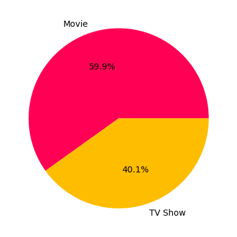
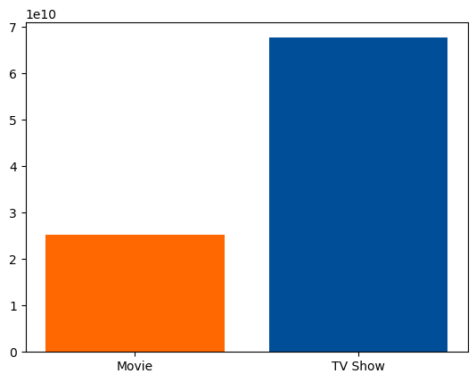
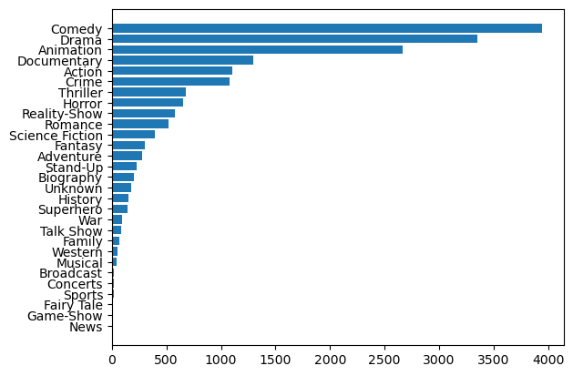
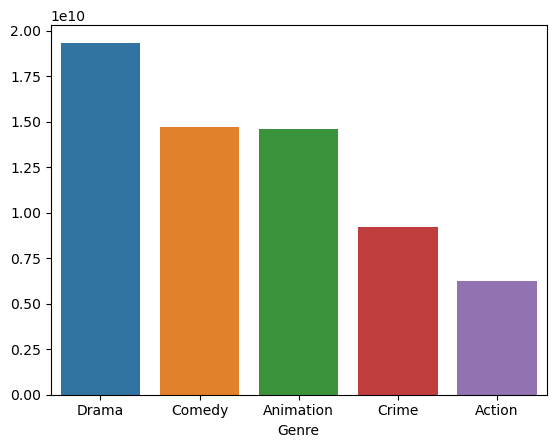

Análisis de Películas y Programas de Televisión
Autora: Bezares García Jael
Introduccion
En la era digital actual, el entretenimiento audiovisual ha experimentado una expansión sin precedentes, con una variedad de películas y programas de televisión disponibles para consumidores de todo el mundo. En este contexto, el análisis de datos se presenta como una herramienta invaluable para comprender las tendencias, preferencias y patrones de consumo dentro de esta vasta y diversa industria.
El presente trabajo se centra en un exhaustivo análisis de películas y programas de televisión, utilizando datos recopilados de la plataforma Kaggle. Los datos abarcan una amplia gama de variables, incluidos títulos, tipos (ya sea película o serie de televisión), fechas de estreno, géneros y tiempo de visualización. Este conjunto de datos proporciona una visión detallada de la dinámica del entretenimiento audiovisual contemporáneo.
El objetivo principal de este análisis es explorar y comprender diversas facetas de este vasto panorama de entretenimiento. Entre las preguntas e hipótesis que se abordan se encuentran: la cantidad de películas y programas de televisión disponibles, los géneros más comunes y los menos comunes, la relación entre los géneros y el tiempo de visualización, así como las diferencias en la clasificación de visualización promedio entre películas y programas de televisión.
Este análisis no solo busca brindar una comprensión profunda de la industria del entretenimiento audiovisual, sino que también busca destacar la importancia de utilizar herramientas analíticas para extraer conocimientos significativos de conjuntos de datos complejos. Los hallazgos obtenidos tienen el potencial de informar estrategias de producción, distribución y consumo de contenido, lo que podría tener un impacto significativo en la industria y en la experiencia del espectador.
Analisis
Durante mi análisis, miré con detenimiento las películas y programas de televisión para entender mejor qué es lo que más se ve. En este analisis hubo un total de 10,880 películas y 7,284 programas de televisión(Grafica 1). Esto significa que hay más películas que programas de televisión, pero sorprendentemente, la gente tiende a ver más series que películas (
Grafica 2).

Gráfica 1: La gráfica muestra la distribución de contenido en nuestro conjunto de datos, donde el 59.9% está compuesto por películas y el 40.1% por programas de televisión. Esta representación visual destaca la predominancia de películas en comparación con los programas de televisión en nuestra muestra.

Gráfica 2: La gráfica muestra la comparación de visualizaciones entre películas y programas de televisión en nuestro conjunto de datos. Se observa que las visualizaciones en programas de televisión son considerablemente mayores que en películas, con un total de 67,707,900,000 visualizaciones en programas de televisión frente a 25,279,500,000 visualizaciones en películas.
Los géneros más comunes son la comedia, el drama, las animaciones, los documentales y las películas de acción. En cambio, los menos comunes son las noticias, los programas de concursos, los deportes, los conciertos y los cuentos de hadas(Gráfica 3).

Gráfica 3: La gráfica muestra la variedad de géneros en nuestro conjunto de datos, desde los más comunes hasta los menos comunes.
Al analizar los géneros más vistos, encontré que la gente prefiere el drama, la comedia, las animaciones, el crimen y las películas de acción. Además, vi que el año 2019 fue el más productivo, con un total de 1,712 películas y programas de televisión registrados (Gráfica 4).

Gráfica 4: La gráfica muestra los géneros más vistos en nuestro conjunto de datos. Se destacan claramente los géneros de drama, comedia, animaciones, crimen y acción como los más populares en términos de visualizaciones.
Estos resultados nos dan una idea clara de lo que la gente prefiere ver y cómo ha evolucionado la producción de películas y programas de televisión a lo largo del tiempo.
Dashboard